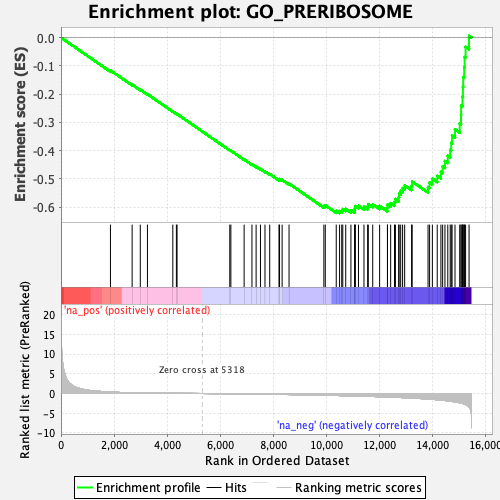
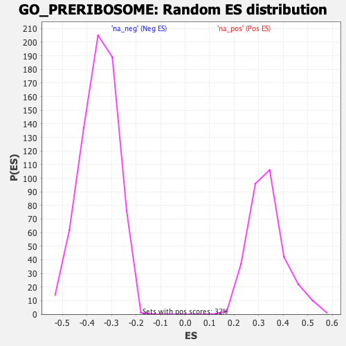

| | | Dataset | DE_genes |
| Phenotype | NoPhenotypeAvailable |
| Upregulated in class | na_neg |
| GeneSet | GO_PRERIBOSOME |
| Enrichment Score (ES) | -0.621184 |
| Normalized Enrichment Score (NES) | -1.7666522 |
| Nominal p-value | 0.0 |
| FDR q-value | 0.028633703 |
| FWER p-Value | 0.196 |
Table: GSEA Results Summary

Fig 1: Enrichment plot: GO_PRERIBOSOME
Profile of the Running ES Score & Positions of GeneSet Members on the Rank Ordered List
| PROBE | GENE SYMBOL | GENE_TITLE | RANK IN GENE LIST | RANK METRIC SCORE | RUNNING ES | CORE ENRICHMENT | | 1 | RRP15 | | | 1864 | 0.364 | -0.1160 | No |
| 2 | KRR1 | | | 2681 | 0.179 | -0.1665 | No |
| 3 | NSA2 | | | 2988 | 0.141 | -0.1844 | No |
| 4 | EMG1 | | | 3258 | 0.116 | -0.2003 | No |
| 5 | BTRC | | | 4214 | 0.057 | -0.2615 | No |
| 6 | FCF1 | | | 4349 | 0.050 | -0.2695 | No |
| 7 | WDR3 | | | 4374 | 0.049 | -0.2704 | No |
| 8 | NIP7 | | | 6362 | -0.063 | -0.3985 | No |
| 9 | RSL1D1 | | | 6402 | -0.065 | -0.4002 | No |
| 10 | UTP14A | | | 6902 | -0.103 | -0.4311 | No |
| 11 | RPF1 | | | 7197 | -0.127 | -0.4485 | No |
| 12 | BOP1 | | | 7354 | -0.141 | -0.4567 | No |
| 13 | RPS7 | | | 7518 | -0.153 | -0.4651 | No |
| 14 | RRS1 | | | 7688 | -0.170 | -0.4738 | No |
| 15 | RIOK1 | | | 7867 | -0.186 | -0.4827 | No |
| 16 | UTP23 | | | 8216 | -0.219 | -0.5023 | No |
| 17 | IMP3 | | | 8236 | -0.222 | -0.5005 | No |
| 18 | MAK16 | | | 8334 | -0.233 | -0.5036 | No |
| 19 | PPAN | | | 8595 | -0.261 | -0.5168 | No |
| 20 | NOB1 | | | 9908 | -0.433 | -0.5960 | No |
| 21 | NGDN | | | 9961 | -0.441 | -0.5933 | No |
| 22 | HEATR1 | | | 10374 | -0.501 | -0.6131 | No |
| 23 | UTP14C | | | 10499 | -0.519 | -0.6140 | Yes |
| 24 | UTP18 | | | 10581 | -0.534 | -0.6119 | Yes |
| 25 | RRP1B | | | 10620 | -0.541 | -0.6069 | Yes |
| 26 | FTSJ3 | | | 10731 | -0.558 | -0.6063 | Yes |
| 27 | NOL10 | | | 10927 | -0.587 | -0.6109 | Yes |
| 28 | WDR12 | | | 11065 | -0.609 | -0.6114 | Yes |
| 29 | RIOK3 | | | 11078 | -0.611 | -0.6037 | Yes |
| 30 | MRPL1 | | | 11093 | -0.614 | -0.5961 | Yes |
| 31 | FBXW9 | | | 11212 | -0.638 | -0.5950 | Yes |
| 32 | NOP14 | | | 11419 | -0.683 | -0.5989 | Yes |
| 33 | TBL3 | | | 11557 | -0.710 | -0.5980 | Yes |
| 34 | UTP3 | | | 11582 | -0.716 | -0.5897 | Yes |
| 35 | WDR36 | | | 11749 | -0.750 | -0.5901 | Yes |
| 36 | MRTO4 | | | 12009 | -0.807 | -0.5958 | Yes |
| 37 | LTV1 | | | 12303 | -0.878 | -0.6027 | Yes |
| 38 | NOL6 | | | 12306 | -0.879 | -0.5907 | Yes |
| 39 | WDR46 | | | 12425 | -0.911 | -0.5857 | Yes |
| 40 | NOP58 | | | 12570 | -0.945 | -0.5820 | Yes |
| 41 | SRFBP1 | | | 12604 | -0.954 | -0.5710 | Yes |
| 42 | NOC4L | | | 12727 | -0.990 | -0.5652 | Yes |
| 43 | BYSL | | | 12743 | -0.995 | -0.5525 | Yes |
| 44 | FBL | | | 12803 | -1.013 | -0.5423 | Yes |
| 45 | UTP20 | | | 12875 | -1.037 | -0.5326 | Yes |
| 46 | RRP9 | | | 12953 | -1.062 | -0.5229 | Yes |
| 47 | RRP36 | | | 13214 | -1.144 | -0.5240 | Yes |
| 48 | EIF6 | | | 13235 | -1.150 | -0.5094 | Yes |
| 49 | IMP4 | | | 13834 | -1.394 | -0.5290 | Yes |
| 50 | BMS1 | | | 13892 | -1.419 | -0.5131 | Yes |
| 51 | LAS1L | | | 13997 | -1.470 | -0.4996 | Yes |
| 52 | PDCD11 | | | 14180 | -1.591 | -0.4894 | Yes |
| 53 | FAM207A | | | 14319 | -1.671 | -0.4753 | Yes |
| 54 | PWP2 | | | 14384 | -1.706 | -0.4559 | Yes |
| 55 | ZNF622 | | | 14471 | -1.768 | -0.4370 | Yes |
| 56 | DCAF13 | | | 14578 | -1.851 | -0.4183 | Yes |
| 57 | PES1 | | | 14669 | -1.936 | -0.3974 | Yes |
| 58 | RIOK2 | | | 14708 | -1.984 | -0.3725 | Yes |
| 59 | ZNF593 | | | 14740 | -2.006 | -0.3468 | Yes |
| 60 | KRI1 | | | 14850 | -2.106 | -0.3248 | Yes |
| 61 | RRP1 | | | 15028 | -2.340 | -0.3040 | Yes |
| 62 | EBNA1BP2 | | | 15077 | -2.423 | -0.2736 | Yes |
| 63 | UTP6 | | | 15082 | -2.438 | -0.2402 | Yes |
| 64 | WDR37 | | | 15133 | -2.515 | -0.2087 | Yes |
| 65 | NOC2L | | | 15149 | -2.543 | -0.1746 | Yes |
| 66 | MPHOSPH10 | | | 15160 | -2.558 | -0.1399 | Yes |
| 67 | TSR1 | | | 15198 | -2.663 | -0.1055 | Yes |
| 68 | RRP7A | | | 15213 | -2.701 | -0.0691 | Yes |
| 69 | NOP56 | | | 15249 | -2.789 | -0.0329 | Yes |
| 70 | WDR74 | | | 15380 | -3.419 | 0.0059 | Yes |
Table: GSEA details [plain text format]

Fig 2: GO_PRERIBOSOME: Random ES distribution
Gene set null distribution of ES for GO_PRERIBOSOME